Lecture 12 — Part 4.3 Transfer Learning and Transformers for NLP
Lesson 11 ประกอบ Transformer จากชิ้นส่วน บทนี้ไม่สร้างเองแล้ว แต่หยิบโมเดลที่เทรนเสร็จจาก Hugging Face มาใช้และปรับให้เข้ากับงานเรา แนวคิดเดียวกับ transfer learning ของ CNN ใน Lesson 8 แค่ body เปลี่ยนจาก CNN เป็น Transformer โค้ดบทนี้เป็น PyTorch เพราะ Transformers v5 ใช้ PyTorch เป็นหลัก
| คำถาม | คำตอบสั้น | อ่านที่ |
|---|---|---|
| Hugging Face มีอะไร | Hub + Datasets, Tokenizers, Transformers | ตอน 1 |
| pipeline() ทำอะไร | tokenize → model → postprocess ในคำสั่งเดียว หกงาน | ตอน 2 |
| ใช้ pretrained model ได้กี่แบบ | หกแบบ ตั้งแต่ไม่เทรนเลยถึง fine-tune ทั้งหมด | ตอน 3 |
| LoRA ประหยัดได้อย่างไร | ล็อก W₀ เรียน BA rank ต่ำ · 742,662 จาก 67 ล้าน | ตอน 4 |
| tokenizer ทำอะไรกับข้อความ | subword, [CLS] [SEP], padding, attention mask | ตอน 5 |
| feature extraction กับ fine-tuning ต่างกันอย่างไร | ล็อก body แล้วใช้ [CLS] · เทรนทั้งโมเดล | ตอน 6 |
| checkpoint | ชื่อชุด weight บน Hub เช่น distilbert-base-uncased |
| body, head | ส่วนที่ไม่ขึ้นกับงานคือ encoder stack · ส่วนท้ายเฉพาะงานเช่น Dense ให้ 6 logit |
| hidden state | vector ที่ encoder ให้ต่อ token · DistilBERT 768 มิติ |
| logit · macro F1 | คะแนนก่อน softmax · ค่าเฉลี่ย F1 ทุกคลาสน้ำหนักเท่ากัน |
แทนที่จะปลูกต้นไม้เองตั้งแต่เมล็ด ไปซื้อต้นที่โตแล้วจากร้าน แล้วตัดแต่งกิ่งให้เข้ากับสวนเรา Hugging Face คือร้านนั้น
LLM คือ deep learning model ที่เทรนบนข้อความมหาศาลเพื่อเรียนรูปแบบของภาษา ทั้ง GPT ซึ่งเป็น decoder-only และ BERT ซึ่งเป็น encoder-only ใช้กับ classification, translation, summarization, QA Hugging Face คือแพลตฟอร์มที่มี library open-source และ Hub สำหรับแบ่งปันโมเดล dataset และแอป ครอบคลุม NLP, vision, audio และ generative AI
| เหตุผลที่ใช้ | ความหมาย |
|---|---|
| Pretrained models | ใช้โมเดลซ้ำจาก Hub ไม่ต้องเทรนจากศูนย์ เช่น DistilBERT 66 ล้าน parameter โหลดบรรทัดเดียว |
| Consistent APIs | โหลดด้วย Auto class รันงานด้วย pipeline() |
| Task adaptation | fine-tune ด้วย head เฉพาะงาน |
| Broad coverage | text, vision, audio, multimodal |
Ecosystem มีสองส่วน: The Hub เก็บ model, dataset และแอปชื่อ Spaces · Libraries คือ Transformers, Diffusers สำหรับ diffusion model และ Datasets สาม library หลักทำงานต่อกันตามลำดับ:
| Library | ทำอะไร | ข้อควรจำ |
|---|---|---|
| Datasets | โหลดและ preprocess dataset | metric แยกไปอยู่ Evaluate |
| Tokenizers | ตัดข้อความเป็น token แปลงเป็น ID เติม special token, padding, truncation | ความเข้าใจบริบทเรียนโดยโมเดล ไม่ใช่ tokenizer |
| Transformers | โครงโมเดลและ weight เช่น BERT, GPT-2, T5 inference และ fine-tuning | ปรับเข้างานเฉพาะได้ |
Keras เน้นสร้างและเทรนโมเดลเอง Hugging Face Transformers เน้นใช้และ fine-tune โมเดลที่เทรนแล้ว · tokenizer ไม่ได้เข้าใจความหมาย แค่ตัดและแปลงเป็น ID
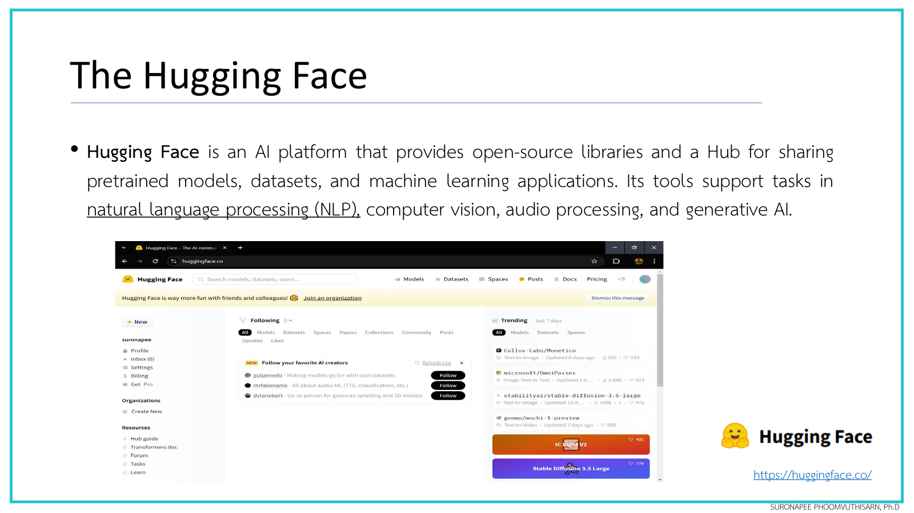
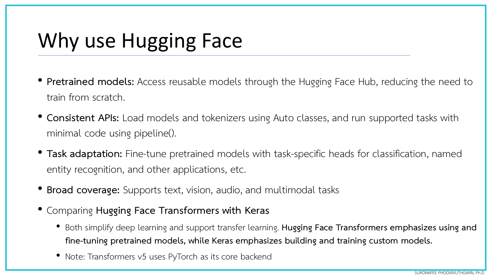
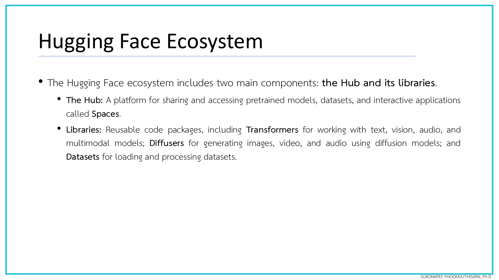
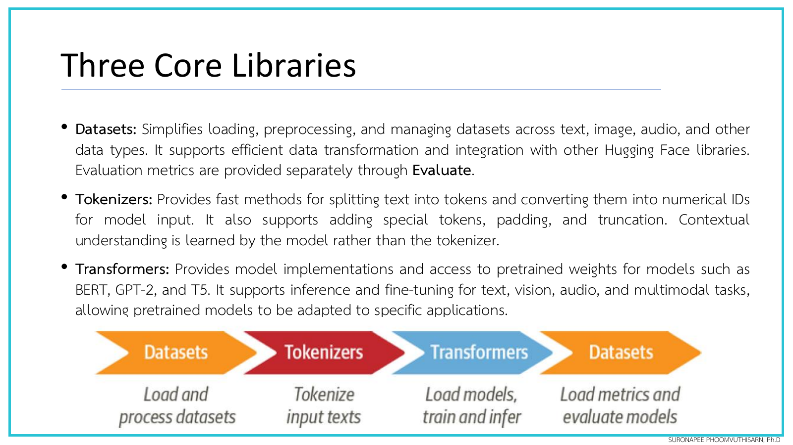
pipeline() รวม preprocessing คือ tokenize เป็นตัวเลข · model inference ได้ logit · postprocessing แปลงเป็นผลที่อ่านได้ เช่น softmax แล้วจับคู่ชื่อ label
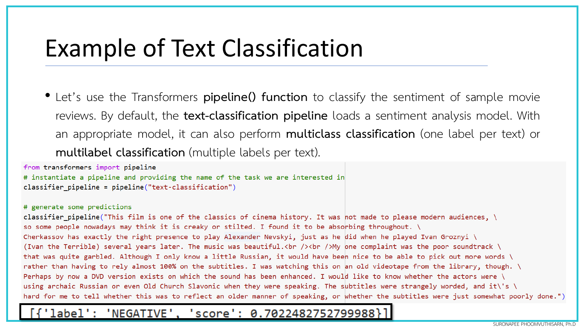
รีวิวชมว่า "classics of cinema history" และเพลงไพเราะ แต่ติเรื่องเสียงและคำบรรยาย โมเดลตอบ NEGATIVE ด้วย score แค่ 0.70 คือ POSITIVE ราว 0.30 ความไม่แน่ใจสะท้อนรีวิวที่ปนสองทาง
from transformers import pipeline
# instantiate a pipeline and providing the name of the task we are interested in
classifier_pipeline = pipeline("text-classification")
# generate some predictions
classifier_pipeline("This film is one of the classics of cinema history. It was not made to please modern audiences, \
so some people nowadays may think it is creaky or stilted. ... The subtitles were strangely worded, and it\'s \
hard for me to tell whether this was to reflect an older manner of speaking, or whether the subtitles were just somewhat poorly done.")pipeline("text-classification") | ระบุแค่ชื่องาน ไม่ระบุโมเดล ได้โมเดล sentiment ตั้งต้นสองคลาส |
[{'label': 'NEGATIVE', 'score': 0.7022…}] | คืน list ของ dict label ที่สูงสุดกับความน่าจะเป็น |
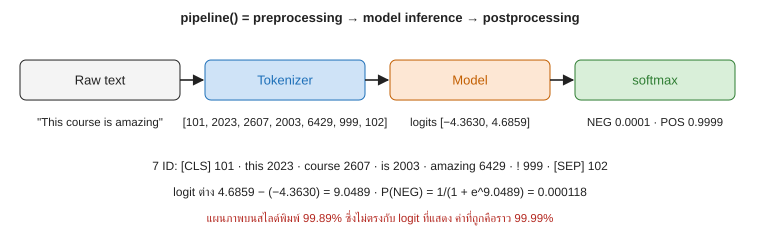
รูปจากสไลด์หน้า 14 แยกสามขั้นให้เห็น: ข้อความกลายเป็น 7 ID รวม [CLS] กับ [SEP] โมเดลให้ logit สองค่า softmax แปลงเป็นความน่าจะเป็น ผลต่าง logit 9.05 ทำให้ POSITIVE ได้ 99.99%
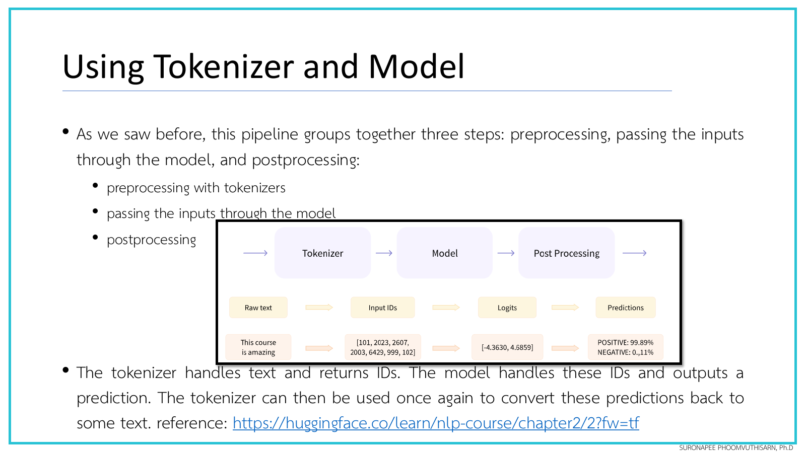
สไลด์หน้า 14 พิมพ์ POSITIVE 99.89% NEGATIVE "0.,11%" ไม่ตรงกับ logit [−4.3630, 4.6859] ที่แสดง ค่าจาก softmax คือ 99.99% ถ้าข้อสอบให้ logit มา ให้คำนวณเอง
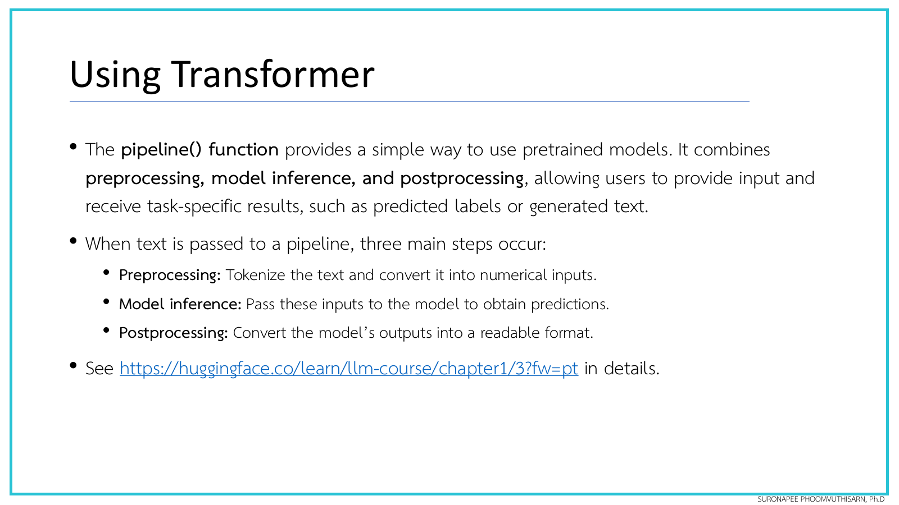
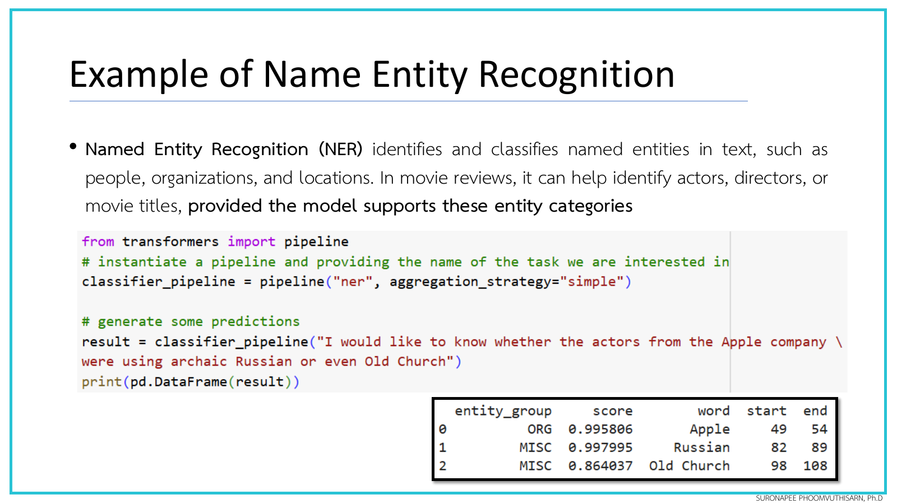
NER หาชื่อเฉพาะ ได้ Apple เป็น ORG score 0.996 ตำแหน่ง 49 ถึง 54 · Russian เป็น MISC 0.998 · Old Church เป็น MISC 0.864 ต่ำสุดเพราะชื่อเต็มคือ Old Church Slavonic aggregation_strategy="simple" รวม token ย่อยที่ติดกันเป็นแถวเดียว
classifier_pipeline = pipeline("ner", aggregation_strategy="simple")
result = classifier_pipeline("I would like to know whether the actors from the Apple company \
were using archaic Russian or even Old Church")
print(pd.DataFrame(result))| งาน | ผลบนสไลด์ | ชนิด Transformer |
|---|---|---|
| question-answering | extractive หาช่วงใน context: "The music was beautiful" score 0.2515 ต่ำเพราะ context ไม่ได้พูดถึงหนังตรงๆ · สไลด์ระบุว่างานนี้ไม่รองรับใน transformers 5.x | encoder-only |
| text-generation | ต่อ "Dear Customer, we are sorry to hear that you are" เป็นจดหมาย ลื่นไหลแต่แต่งเนื้อหาเอง · max_length=100 รวม prompt จึงถูกตัดกลางประโยค | decoder-only GPT-2 |
| summarization | ได้สามประโยคแรกของรีวิวแทบคำต่อคำ ตัดที่ max_length=56 ส่วนที่ติหายหมด | encoder-decoder |
| translation | model="Helsinki-NLP/opus-mt-th-en" แปลไทยเป็นอังกฤษ จับใจความได้ แต่ชื่อเฉพาะเพี้ยน · min_length=100 | encoder-decoder |
ชื่องานในโค้ดเขียน "translation_en_to_th" กลับทิศกับโมเดล th-en แต่เมื่อระบุ model= ทิศมาจากโมเดลที่เลือก ผลจึงเป็นอังกฤษ เชอร์คัสซอฟกลายเป็น "Shercus Sof"
QA แบบนี้คือ extractive คัดลอกช่วงจาก context ไม่ได้แต่งคำตอบใหม่ · ชื่องานใน pipeline ไม่ได้กำหนดทิศการแปลถ้าระบุ model แล้ว
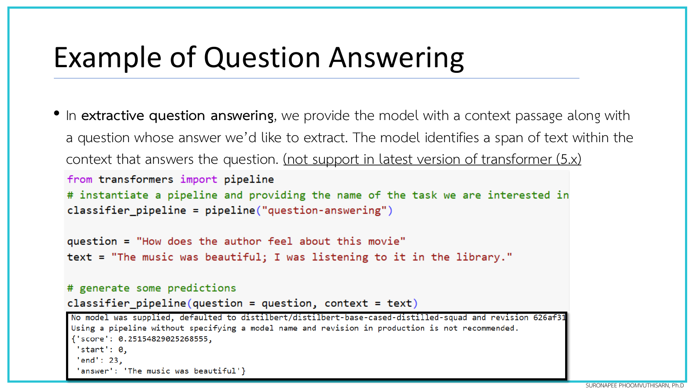
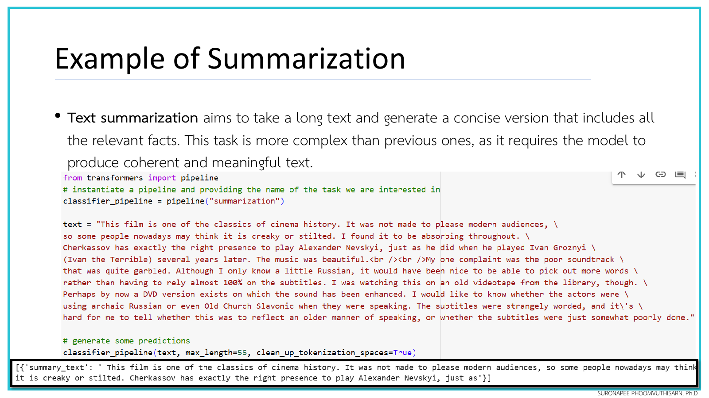
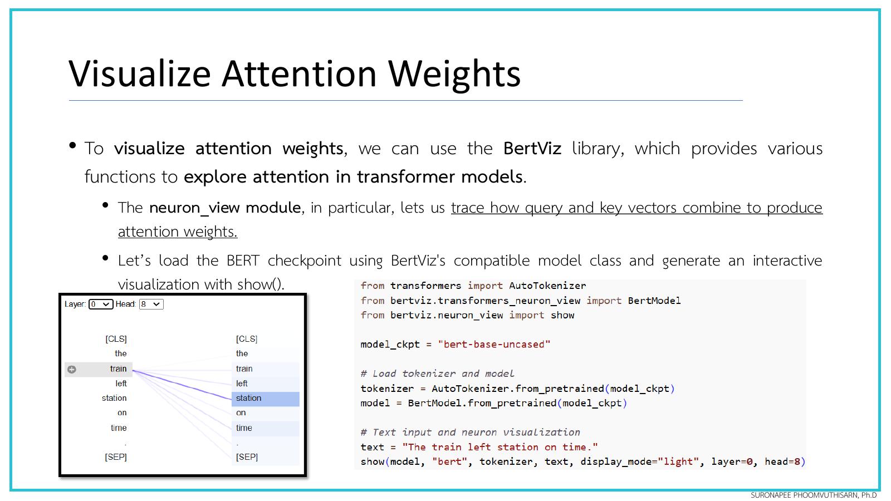
ประโยคเดียวกับตัวอย่าง self-attention ใน Lesson 11 ใน layer 0 head 8 คำว่า train ให้ weight สูงกับ station BERT base มี 12 × 12 = 144 head แต่ละ head โฟกัสต่างกัน
from transformers import AutoTokenizer
from bertviz.transformers_neuron_view import BertModel
from bertviz.neuron_view import show
model_ckpt = "bert-base-uncased"
# Load tokenizer and model
tokenizer = AutoTokenizer.from_pretrained(model_ckpt)
model = BertModel.from_pretrained(model_ckpt)
# Text input and neuron visualization
text = "The train left station on time."
show(model, "bert", tokenizer, text, display_mode="light", layer=0, head=8)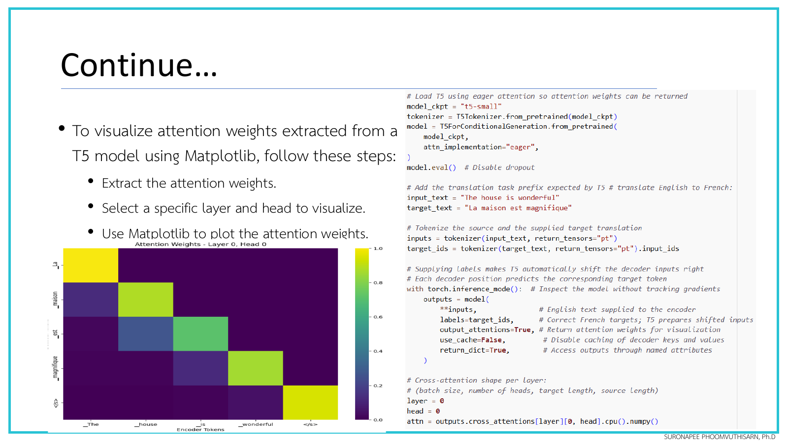
heatmap layer 0 head 0 แถวคือ token ฝรั่งเศส คอลัมน์คือ token อังกฤษ ช่องสว่างเป็นเส้นทแยง La↔The, maison↔house, est↔is, magnifique↔wonderful เพราะสองประโยคเรียงคำตรงกัน นี่คือ cross-attention ที่ query = target key/value = source
# Load T5 using eager attention so attention weights can be returned
model_ckpt = "t5-small"
tokenizer = T5Tokenizer.from_pretrained(model_ckpt)
model = T5ForConditionalGeneration.from_pretrained(
model_ckpt,
attn_implementation="eager",
)
model.eval() # Disable dropout
input_text = "The house is wonderful"
target_text = "La maison est magnifique"
inputs = tokenizer(input_text, return_tensors="pt")
target_ids = tokenizer(target_text, return_tensors="pt").input_ids
with torch.inference_mode():
outputs = model(
**inputs,
labels=target_ids, # T5 prepares shifted inputs
output_attentions=True, # Return attention weights
use_cache=False,
return_dict=True,
)
# Cross-attention shape per layer: (batch size, number of heads, target length, source length)
layer = 0
head = 0
attn = outputs.cross_attentions[layer][0, head].cpu().numpy()attn_implementation="eager" | คำนวณ attention ตรงๆ เพื่อคืน weight ได้ |
labels=target_ids | T5 เลื่อน target เป็น decoder input เองแบบ teacher forcing |
outputs.cross_attentions[layer][0, head] | matrix (target length, source length) ของ layer และ head ที่เลือก |
Transfer learning ปรับ pretrained model เข้างานใหม่ได้เร็ว ใช้ข้อมูลและเวลาเทรนน้อย LLM ได้ประโยชน์มาก ตัวอย่างงาน: chatbot บริการลูกค้า, เวชระเบียน, sentiment ของรีวิว, เอกสารกฎหมาย workshop ใช้ tweet แค่ 16,000 ข้อความ fine-tune 5 epoch ราว 193 วินาที ได้ test accuracy 0.9235
| วิธี | อะไรถูกเทรน | ใช้เมื่อ | ในบทนี้ |
|---|---|---|---|
| Direct inference | ไม่เทรน | มีโมเดลเฉพาะงานอยู่แล้ว | pipeline() |
| Prompting zero/few-shot | weight ไม่เปลี่ยน ใส่คำสั่งใน input | ชี้นำ generative model | prompt "Dear Customer…" |
| Feature extraction + classifier | classifier ภายนอก | ทรัพยากรน้อย | acc 0.635 |
| Full fine-tuning | ทุก parameter | ปรับเข้าข้อมูลเฉพาะงาน | acc 0.9235 |
| PEFT เช่น LoRA | ส่วนเล็กหรือ adapter | ประหยัด memory และพื้นที่ | acc 0.9005 |
| RAG | ปกติไม่เทรน เปลี่ยน input | ตอบด้วยความรู้ภายนอกหรือที่อัปเดต | ตอน 4.2 |
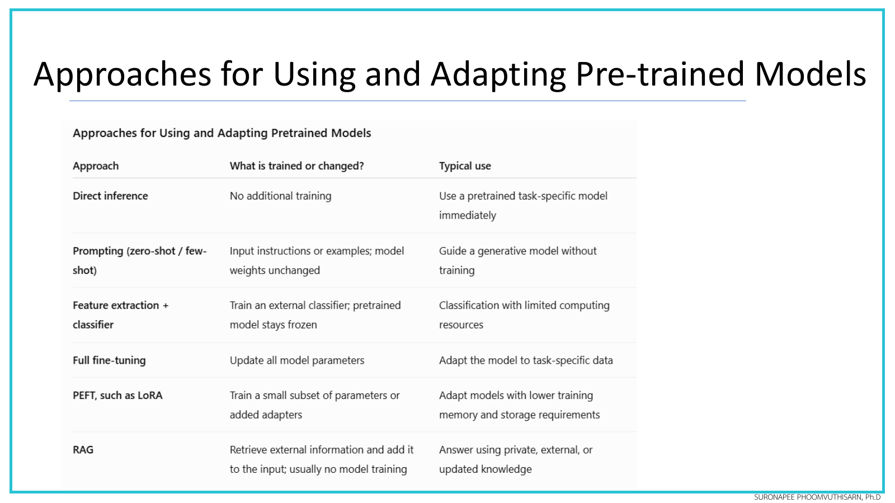
ตารางเรียงจากบนลงล่างตามปริมาณที่ต้องเทรนคร่าวๆ สองแถวแรกไม่เทรนเลย แถวท้ายเปลี่ยน input แทน weight
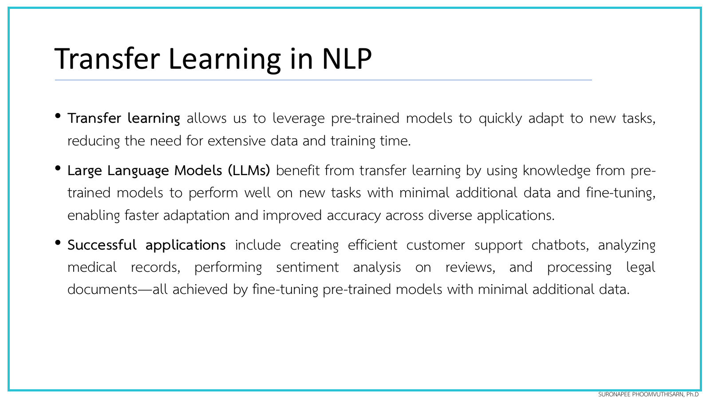
แทนที่จะพิมพ์หนังสือใหม่ทั้งเล่มเพื่อแก้ไม่กี่จุด แปะโพสต์อิทเล็กๆ ทับหน้าที่ต้องแก้ เก็บหนังสือเล่มเดิมไว้เล่มเดียว แล้วมีโพสต์อิทคนละชุดต่องาน
Full fine-tuning อัปเดตทุก parameter ต้องใช้ GPU memory การคำนวณ และพื้นที่เก็บมาก ต้องเก็บโมเดลเต็มหนึ่งชุดต่องาน PEFT ล็อก parameter ส่วนใหญ่ เทรนแค่ชุดเล็ก LoRA คือ PEFT ที่เรียน "การแก้" แบบ low-rank ของ weight matrix ที่เลือก
W₀ ล็อก เทรนแค่ A ขนาด r × d กับ B ขนาด d × r ผลคูณ BA ขนาด d × d เท่า W₀ แต่ rank ไม่เกิน r · α/r คุมว่า update มีผลแค่ไหน
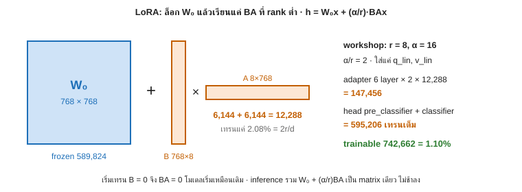
กล่องฟ้าใหญ่คือ W₀ 768 × 768 ที่ล็อก แถบส้มสองแถบคือ B กับ A ซึ่งรวมกันมีแค่ 12,288 ค่า ตัวเลขขวาคือ parameter จริงใน workshop
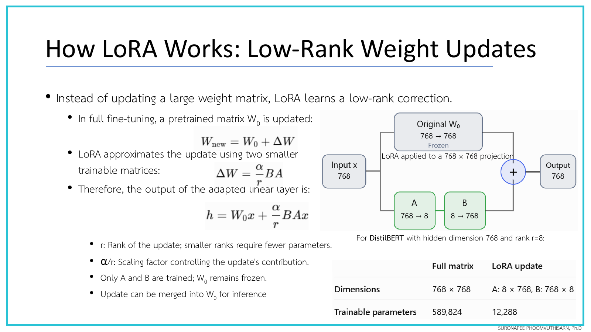
d = 768 r = 8: full 589,824 · LoRA 12,288 คือ 2r/d = 2.08% · α/r = 16/8 = 2 · 10 งาน: full ต้องเก็บ 10 × 66,958,086 ≈ 670 ล้าน · LoRA เก็บโมเดลชุดเดียว + 10 × 742,662 ≈ 7.4 ล้าน
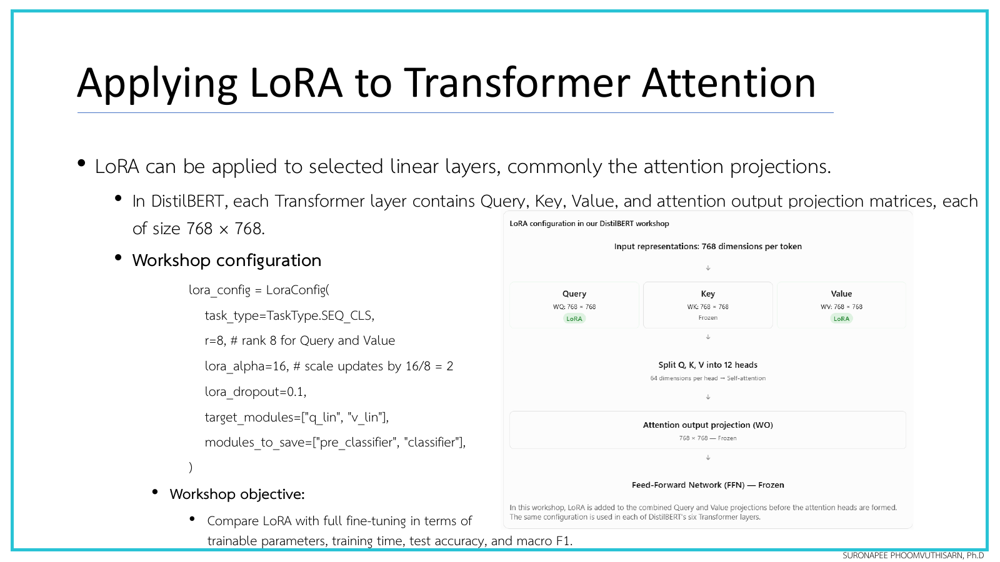
config ของ workshop เติม LoRA แค่ Query กับ Value ส่วน Key, output projection และ FFN ล็อก head ใหม่เทรนเต็มเพราะเริ่มจาก weight สุ่ม ไม่มีความรู้เดิมให้รักษา
lora_config = LoraConfig(
task_type=TaskType.SEQ_CLS,
r=8, # rank 8 for Query and Value
lora_alpha=16, # scale updates by 16/8 = 2
lora_dropout=0.1,
target_modules=["q_lin", "v_lin"],
modules_to_save=["pre_classifier", "classifier"],
)task_type=TaskType.SEQ_CLS | sequence classification |
r=8, lora_alpha=16 · lora_dropout=0.1 | rank 8 scale 2 · dropout บนเส้นทาง LoRA |
target_modules=["q_lin", "v_lin"] | เติม LoRA ที่ Query และ Value projection |
modules_to_save=["pre_classifier", "classifier"] | head เทรนเต็ม ไม่ใช่ LoRA |
adapter 6 layer × 2 matrix × 12,288 = 147,456 · head (768 × 768 + 768) + (768 × 6 + 6) = 595,206 · trainable 742,662 จาก total 67,700,748 = 1.10% · total มากกว่าโมเดลเดิม 66,958,086 พอดี 742,662 เพราะ PEFT เก็บ adapter และสำเนา head แยก
| notebook ของอาจารย์ | Full fine-tuning | LoRA r = 8 |
|---|---|---|
| trainable | 66,958,086 (100%) | 742,662 (1.10%) |
| test accuracy · macro F1 | 0.9235 · 0.8754 | 0.9005 · 0.8497 |
| เวลาเทรน | ฐาน | น้อยกว่าราว 26% |
LoRA ไม่ได้ทำให้เวลาลดตามสัดส่วน parameter เพราะ forward และ backward ยังผ่านทั้งโมเดล ที่ประหยัดจริงคือ memory ของ optimizer และพื้นที่เก็บต่องาน · เริ่มเทรน B = 0 จึง BA = 0 · inference รวมเป็น matrix เดียว ไม่ช้าลง
4 × 1,024 + 1,024 × 4 = 8,192 · 2r/d = 8/1,024 = 0.78% ของ 1,048,576
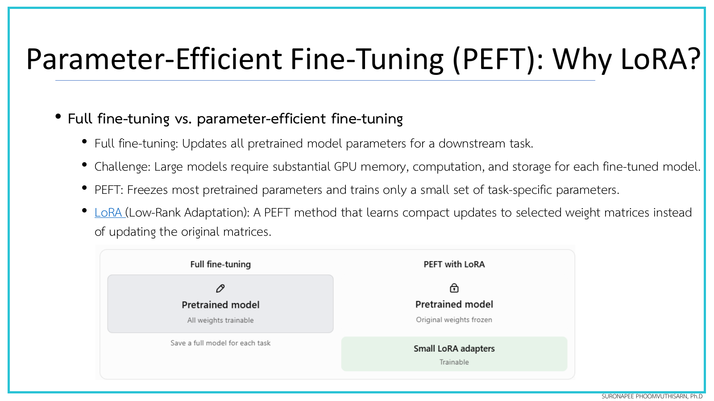
RAG ค้นข้อมูลภายนอกที่เกี่ยวข้องแล้วเติมใน input ของ generative model โดยไม่ต้องเทรน generator ใหม่ อัปเดต knowledge base ได้เลย similarity score วัดความเกี่ยวข้องของการค้น ไม่ใช่ความถูกต้องของคำตอบ ขั้นตอน: สร้าง knowledge base จากโน้ต 6 ชิ้น → แปลงคำถามและเอกสารเป็น embedding ด้วย all-MiniLM-L6-v2 เลือก top-k ตาม cosine similarity → ส่งให้ FLAN-T5-small ตอบ
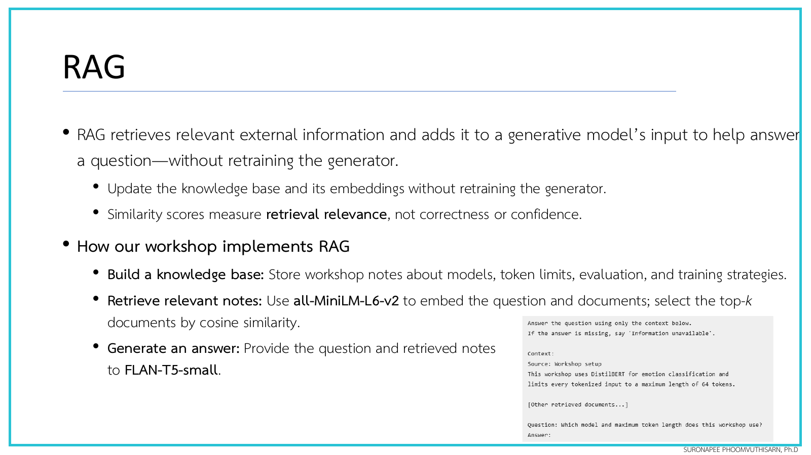
ตัวอย่างนี้มีไว้ให้เห็นว่า ค้นถูกไม่ได้แปลว่าตอบถูก
ผลของอาจารย์ คำถามเรื่อง max token length และ metric ได้ Workshop setup 0.420 สูงสุด แต่ FLAN-T5-small ตอบแค่ "2." และตอนไม่มี retrieval ก็ตอบวนไม่จบ
ถ้า normalize embedding ให้ยาว 1 แล้ว dot product คือ cosine similarity เลย ใน notebook ตั้ง normalize_embeddings=True
q = [1, 1, 0] d₁ = [1, 1, 1] d₂ = [0, 0, 1] d₃ = [1, 0, 0]: cos = 2/(√2·√3) = 0.816 · 0 · 1/√2 = 0.707 · top-2 = d₁, d₃
dataset สำหรับ text classification ของ workshop มาจากงานวิจัยอารมณ์ใน tweet ภาษาอังกฤษ สไลด์ระบุหกอารมณ์ โกรธ รังเกียจ กลัว สุข เศร้า และ ประหลาดใจ โมเดลคือ DistilBERT ซึ่งเล็กและเร็วกว่า BERT แต่ใกล้เคียง 6 layer แทน 12 ราว 66 ล้านแทน 110 ล้าน เปลี่ยนเป็น BERT ได้ด้วยการเปลี่ยนชื่อ checkpoint
label จริงของ dataset "emotion" คือ sadness, joy, love, anger, fear, surprise ที่ index 0–5 สไลด์หน้า 23 เขียน disgust แทน love ถ้าข้อสอบถามตามข้อความสไลด์ให้ตอบ disgust ถ้าถามตาม dataset หรือโค้ดให้ใช้ love
workshop รันบน Kaggle เลือก Accelerator เป็น GPU full fine-tuning 5 epoch ราว 193 วินาทีบน GPU บน CPU นานกว่าหลายสิบเท่า
# load the emotion dataset with the load_dataset() function:
from datasets import load_dataset
emotions = load_dataset("emotion")
emotions # look inside our emotions object
import pandas as pd
emotions.set_format(type="pandas")
df = emotions["train"][:]
df.head()load_dataset("emotion") | DatasetDict สาม split คอลัมน์ text, label · train 16,000 val 2,000 test 2,000 |
emotions.set_format(type="pandas") | ให้ Dataset คืน pandas DataFrame เปลี่ยนกลับได้ |
ห้าแถวแรก: "i didnt feel humiliated" label 0 sadness · "i am feeling grouchy" label 3 anger ข้อความเป็นตัวพิมพ์เล็กไม่มีวรรคตอน
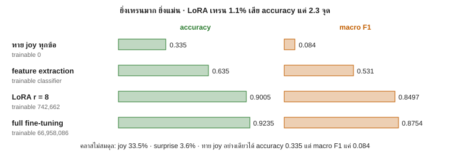
แถวบนคือ baseline ที่ทาย joy ทุกข้อ ได้ accuracy 0.335 แต่ macro F1 แค่ 0.084 เพราะห้าคลาสที่เหลือได้ F1 = 0 นี่คือเหตุที่ workshop เลือกโมเดลด้วย macro F1 แถว feature extraction เป็นค่าบน validation แถวอื่นเป็น test
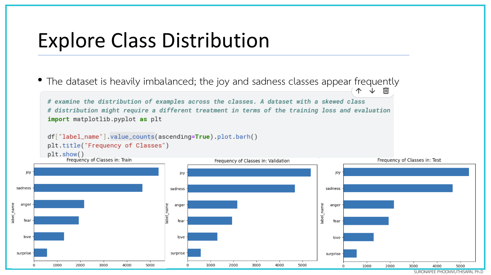
joy 5,362 คือ 33.5% · surprise 572 คือ 3.6% · ต่างกัน 9.4 เท่า · ทาย joy ทุกข้อ: F1 ของ joy = 2 × 0.335 × 1/1.335 = 0.50 · macro F1 = 0.50/6 = 0.084
กราฟหน้า 27 แกน x ของ validation และ test ยาวถึง 5,000 เท่า train ทั้งที่แต่ละ split มี 2,000 แถว ใช้ดูลำดับของคลาสเท่านั้น
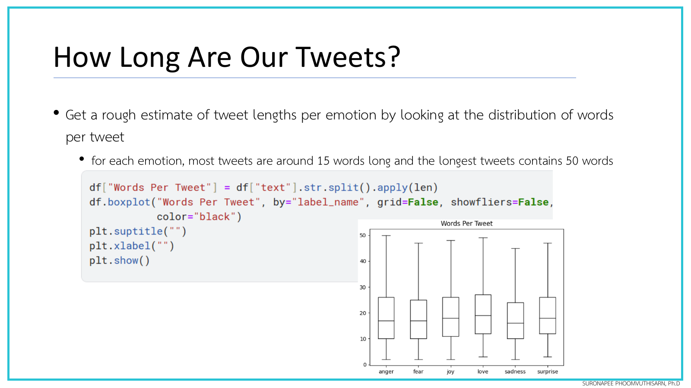
tweet ส่วนใหญ่ยาวราว 15 คำ ยาวสุดราว 50 คำ ทุกอารมณ์กล่องซ้อนกัน ความยาวจึงไม่ใช่ตัวแยกอารมณ์ และห่างจากเพดาน 512 token ของ DistilBERT มาก
df["Words Per Tweet"] = df["text"].str.split().apply(len)
df.boxplot("Words Per Tweet", by="label_name", grid=False, showfliers=False,
color="black")
plt.suptitle("")
plt.xlabel("")
plt.show()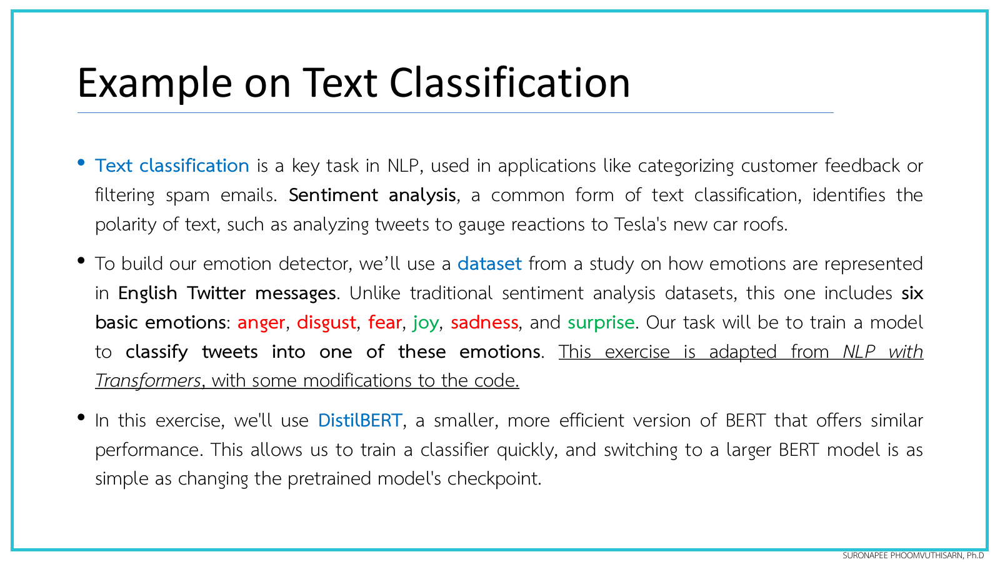
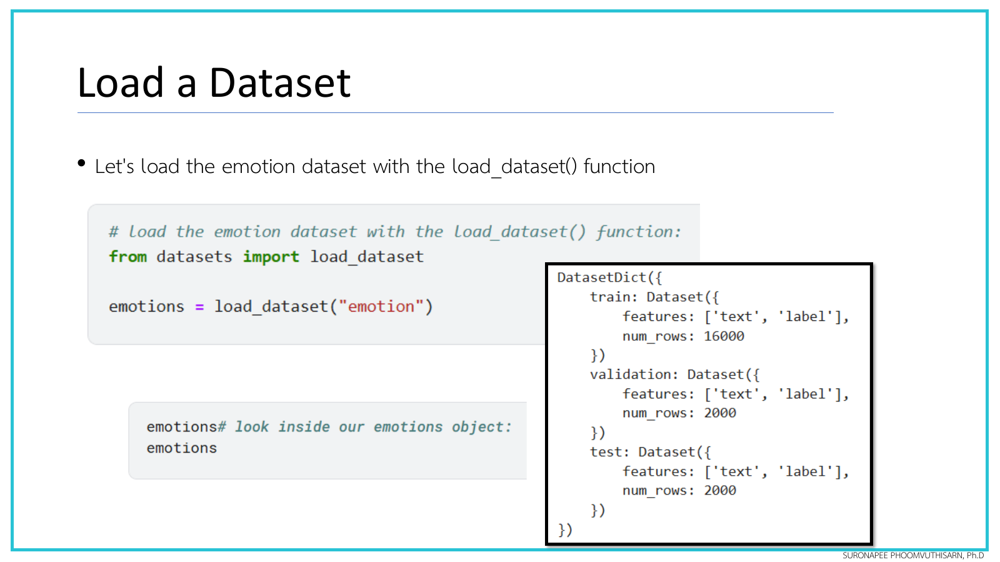
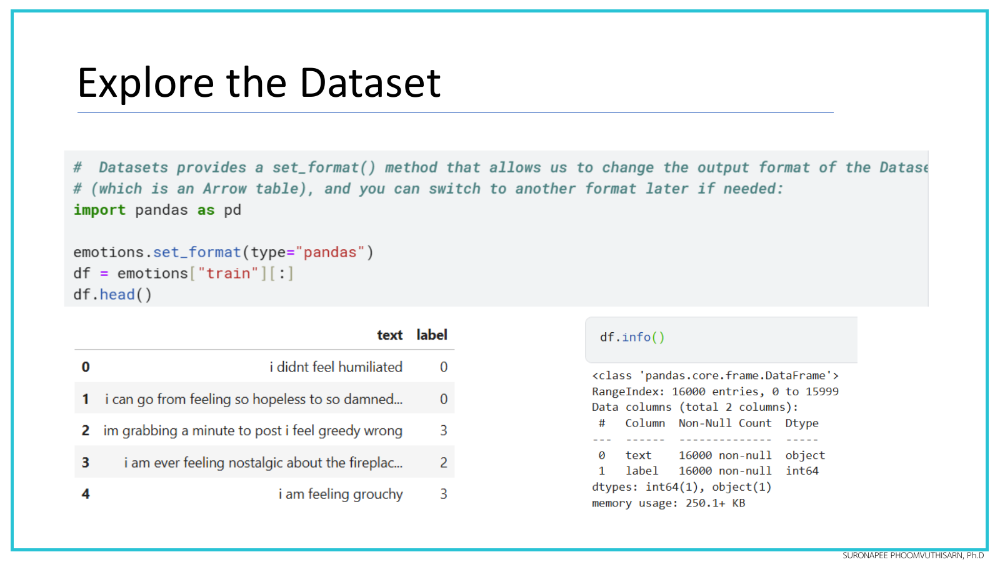
AutoTokenizer.from_pretrained() รับชื่อ checkpoint แล้วเลือก class ให้อัตโนมัติ เปลี่ยน checkpoint เป็น bert-base-uncased หรือ roberta-base แล้วโค้ดที่เหลือไม่ต้องแก้ tokenizer ต้องมาจาก checkpoint เดียวกับโมเดลเสมอ เพราะ ID เดียวกันอาจเป็นคนละคำในอีก tokenizer
# from the name of the checkpoint.
from transformers import AutoTokenizer
model_ckpt = "distilbert-base-uncased"
tokenizer = AutoTokenizer.from_pretrained(model_ckpt)
# load the specific class manually
from transformers import DistilBertTokenizer
distilbert_tokenizer = DistilBertTokenizer.from_pretrained(model_ckpt)
text = "Tokenizing text is a core task of NLP."
encoded_text = tokenizer(text)
print(encoded_text)
tokens = tokenizer.convert_ids_to_tokens(encoded_text.input_ids)
print(tokens)
print(tokenizer.convert_tokens_to_string(tokens))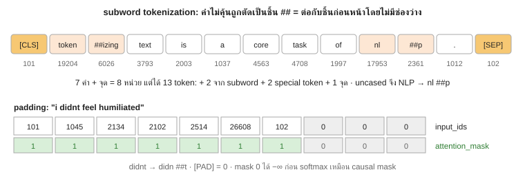
แถวบนคือ token ที่ได้ ช่องส้มคือ subword ช่องเหลืองคือ special token แถวล่างคือข้อความแรกของ dataset หลัง padding ช่องเทาคือ [PAD] ที่ attention_mask เป็น 0
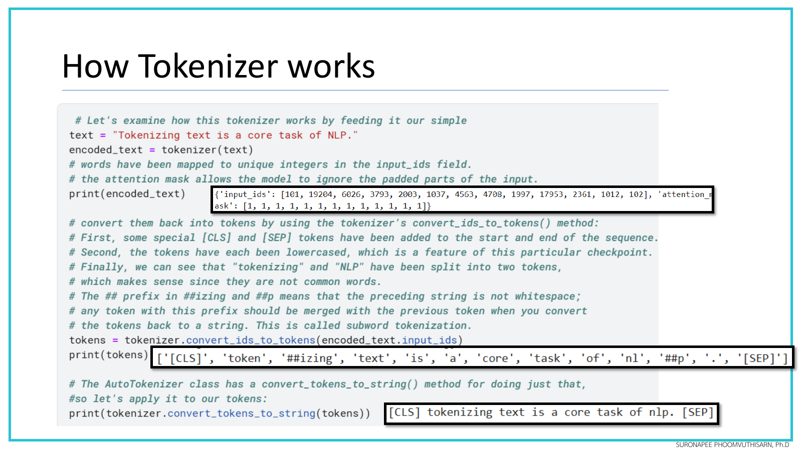
สี่อย่างที่เกิดขึ้น: เติม [CLS] 101 ต้น [SEP] 102 ท้าย · ทุก token เป็นตัวพิมพ์เล็กเพราะ uncased · tokenizing และ NLP ถูกตัดสองชิ้นเพราะไม่ใช่คำพบบ่อย · ## แปลว่าต่อกับชิ้นก่อนหน้าโดยไม่มีช่องว่าง ข้อดีของ subword คือไม่มีคำ [UNK] แบบ Lesson 11
| attribute | ค่า |
|---|---|
| vocab_size | 30,522 |
| model_max_length | 512 |
| model_input_names | ['input_ids', 'attention_mask'] |
| special token ID | [PAD] 0 · [UNK] 100 · [CLS] 101 · [SEP] 102 · [MASK] 103 |
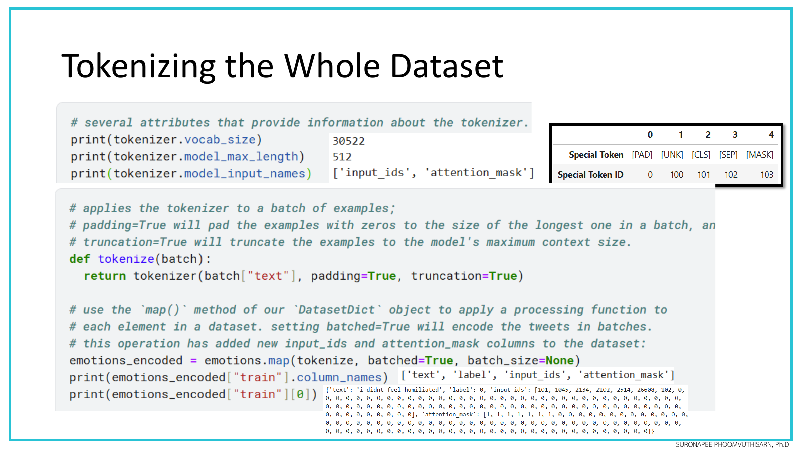
แถวแรก "i didnt feel humiliated" ได้ input_ids [101, 1045, 2134, 2102, 2514, 26608, 102, 0, 0, …] didnt ถูกตัดเป็น didn + ##t ได้ 7 token จริง ตามด้วย 0 attention_mask เป็น 1 เจ็ดตัวแล้ว 0
# padding=True will pad the examples with zeros to the size of the longest one in a batch,
# truncation=True will truncate the examples to the model's maximum context size.
def tokenize(batch):
return tokenizer(batch["text"], padding=True, truncation=True)
# setting batched=True will encode the tweets in batches.
emotions_encoded = emotions.map(tokenize, batched=True, batch_size=None)
print(emotions_encoded["train"].column_names)
print(emotions_encoded["train"][0])padding=True · truncation=True | เติม 0 จนยาวเท่าข้อความยาวสุดใน batch · ตัดที่ 512 |
emotions.map(tokenize, batched=True, batch_size=None) | batch_size=None คือทั้ง split เป็น batch เดียว ทุกแถวยาวเท่าแถวยาวสุดของ split |
column_names | เพิ่ม input_ids และ attention_mask ต่อจาก text, label |
[PAD] คือ 0 ไม่ใช่ [CLS] · "Tokenizing text is a core task of NLP." มี 8 หน่วยแต่ได้ 13 token · attention_mask 0 คือ padding ที่ให้ข้าม
4 คำ + [CLS] + [SEP] = 6 ตรงกับ torch.Size([1, 6]) ในหน้า 35
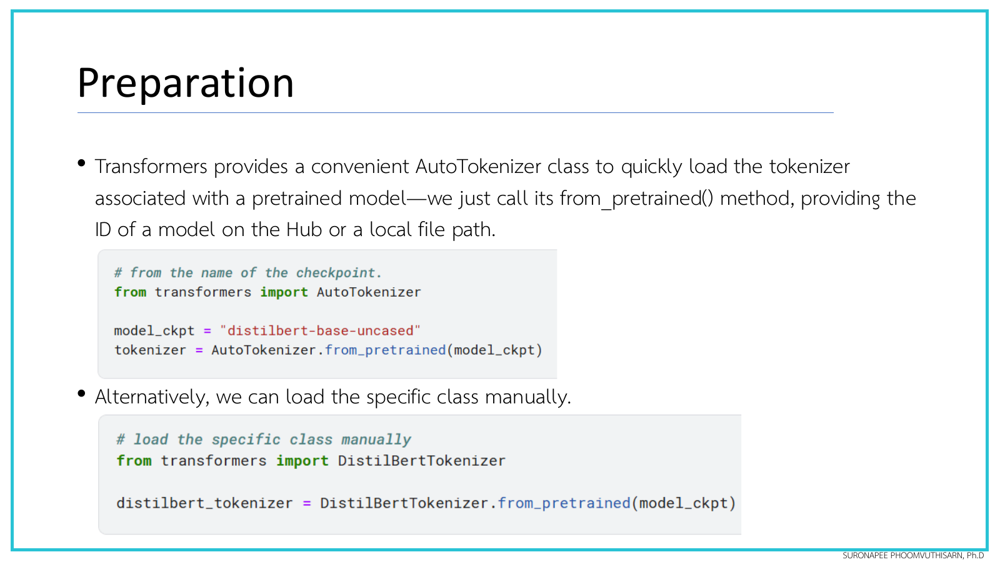
DistilBERT ถูก pretrain ให้ทายคำที่ถูก [MASK] ตอน pretrain hidden state ทุกตัวเข้า layer ที่ทาย 30,522 คำ สำหรับ classification ต้องแทนด้วย layer ที่ให้ 6 คลาส มีสองทาง: ใช้ hidden state เป็น feature แล้วเทรน classifier แยก หรือเทรนทั้งโมเดล
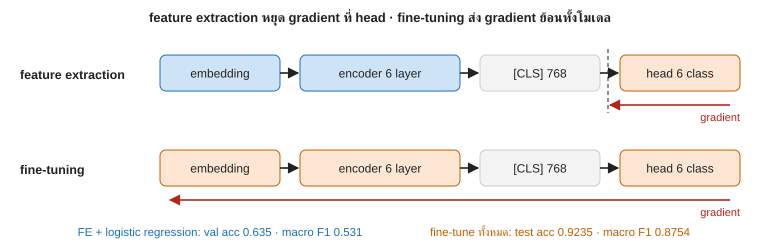
แถวบน body สีฟ้าล็อก ลูกศร gradient หยุดที่เส้นประหน้า head แถวล่างทุกกล่องเป็นสีส้ม gradient ย้อนถึง embedding
feature extraction เทรนเร็ว คำนวณ hidden state ครั้งเดียว ไม่ต้องใช้ GPU ระหว่างเทรน classifier AutoModel โหลดแค่ body ไม่มี head output คือ hidden states
from transformers import TFAutoModel, AutoTokenizer, AutoModel
import torch
import tensorflow as tf
# Load the pre-trained tokenizer and model
model_ckpt = "distilbert-base-uncased"
tokenizer = AutoTokenizer.from_pretrained(model_ckpt)
# Load the model and move it to the specified device
# Check if CUDA (GPU) is available and set the device accordingly
device = torch.device("cuda" if torch.cuda.is_available() else "cpu")
model = AutoModel.from_pretrained(model_ckpt).to(device)
# load DistilBERT in TensorFlow by using the TFAutoModel class
#tf_model = TFAutoModel.from_pretrained(model_ckpt)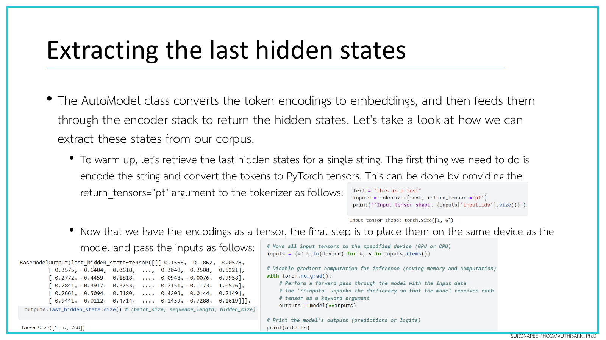
"this is a test" ได้ input [1, 6] และ last_hidden_state [1, 6, 768] คือ batch 1 ข้อความ 6 token token ละ 768 มิติ encoder รักษาขนาดเข้าเท่าไรออกเท่านั้น
text = "this is a test"
inputs = tokenizer(text, return_tensors="pt")
print(f"Input tensor shape: {inputs['input_ids'].size()}") # torch.Size([1, 6])
# Move all input tensors to the specified device (GPU or CPU)
inputs = {k: v.to(device) for k, v in inputs.items()}
# Disable gradient computation for inference (saving memory and computation)
with torch.no_grad():
# The '**inputs' unpacks the dictionary so that the model receives each tensor as a keyword argument
outputs = model(**inputs)
print(outputs)
outputs.last_hidden_state.size() # torch.Size([1, 6, 768])
outputs.last_hidden_state[:,0].size() # torch.Size([1, 768])
def extract_hidden_states(batch):
# Move all model inputs (e.g., input_ids, attention_mask) to the specified device (GPU or CPU)
inputs = {k: v.to(device) for k, v in batch.items()
if k in tokenizer.model_input_names} # Ensure we only pass the model-required input
# Perform inference without tracking gradients (to save memory and computation)
with torch.no_grad():
# Pass the inputs through the model and extract the last hidden state (output of the model)
last_hidden_state = model(**inputs).last_hidden_state
# Extract the hidden state corresponding to the [CLS] token (first token in the sequence)
# `[:,0]` selects the hidden state of the [CLS] token for each example in the batch
# Move the tensor back to CPU and convert it to a NumPy array for easier handling
return {"hidden_state": last_hidden_state[:, 0].cpu().numpy()}
emotions_encoded.set_format("torch", columns=["input_ids", "attention_mask", "label"])
emotions_hidden = emotions_encoded.map(extract_hidden_states, batched=True, batch_size=4)torch.device("cuda" if torch.cuda.is_available() else "cpu") · .to(device) | ใช้ GPU ถ้ามี · input ต้องอยู่อุปกรณ์เดียวกับโมเดล |
return_tensors="pt" | คืน PyTorch tensor |
torch.no_grad() | ปิด gradient เพราะไม่ได้เทรน ประหยัด memory |
model(**inputs) | แตก dict เป็น input_ids=…, attention_mask=… |
last_hidden_state[:, 0] | token ตำแหน่ง 0 คือ [CLS] ได้ [batch, 768] |
if k in tokenizer.model_input_names | ส่งแค่ input_ids และ attention_mask |
.cpu().numpy() | กลับ CPU เป็น NumPy ให้ scikit-learn ใช้ |
[CLS] ผ่าน self-attention ที่เห็นทุก token จึงสรุปทั้งประโยคใน 768 ค่า · train set กลายเป็น matrix 16,000 × 768 · logistic regression ได้ val accuracy 0.635 macro F1 0.531 ดีกว่า baseline แต่อ่อนกับคลาสเล็ก F1 ของ love 0.371 surprise 0.361
[:, 0] คือ token แรกของทุกตัวอย่าง ไม่ใช่ตัวอย่างแรก · AutoModel ไม่มี head ใช้ classify เองไม่ได้
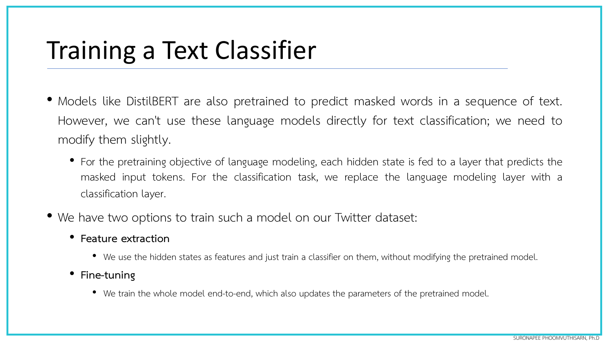
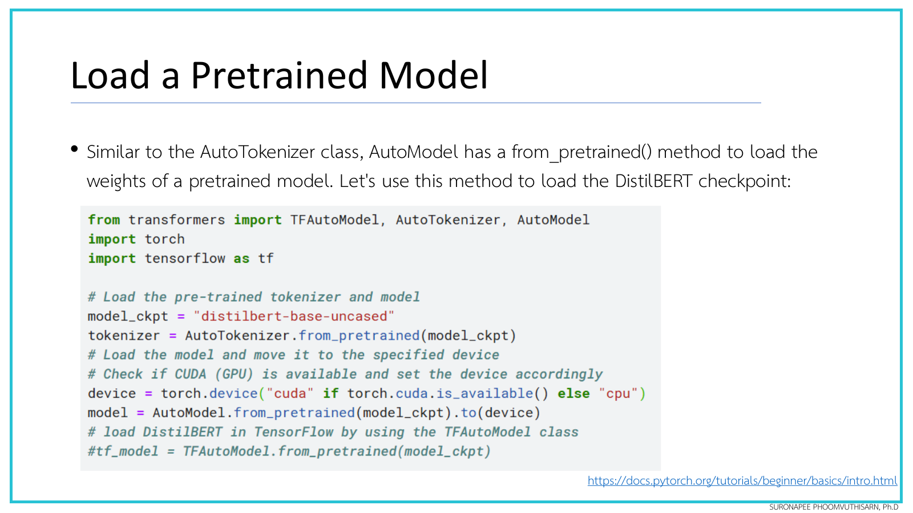
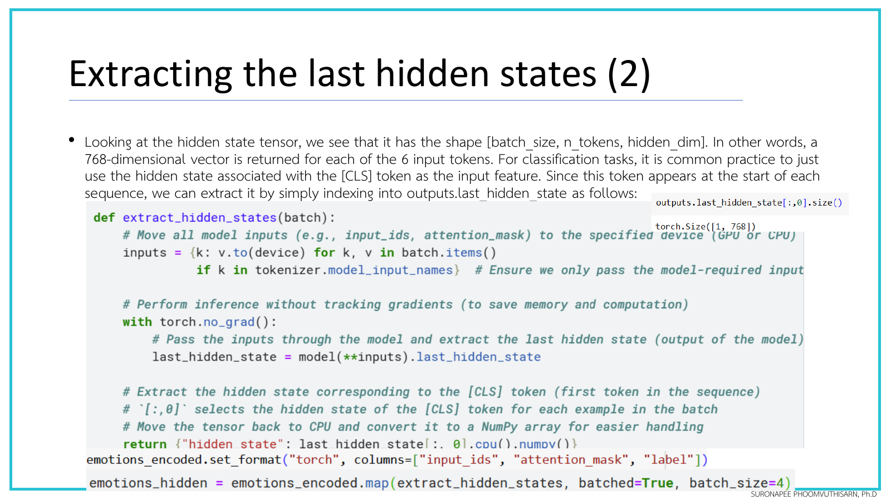
Transformer แบ่งเป็น body ที่ไม่ขึ้นกับงาน และ head ที่เฉพาะงาน classification head ใช้ hidden state ของ [CLS] ผ่าน dropout แล้ว linear layer ให้ logit ต่อคลาส ทางเลือกอื่นคือ mean pooling ของทุก hidden state fine-tuning เทรน hidden state ไปด้วย head ต้อง differentiable ให้ gradient ย้อนเข้า encoder ได้ logistic regression ของ scikit-learn จึงใช้ไม่ได้
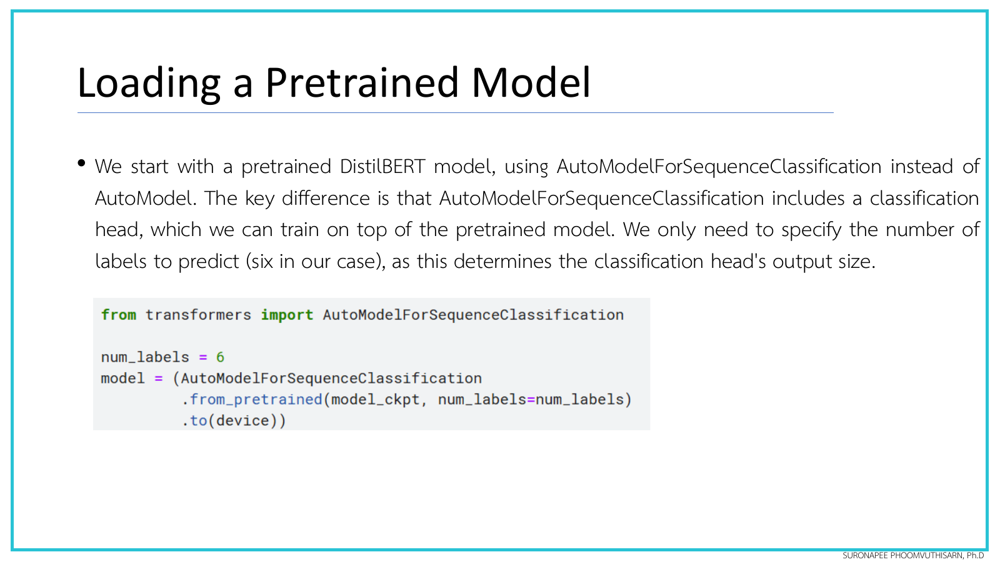
ต่างจาก AutoModel ตรงที่มี head มาด้วย ระบุแค่ num_labels=6 notebook เตือนว่า classifier.weight และ pre_classifier.bias เป็น MISSING ใน checkpoint คือ head เริ่มจาก weight สุ่ม body โหลดจาก checkpoint
from transformers import AutoModelForSequenceClassification
num_labels = 6
model = (AutoModelForSequenceClassification
.from_pretrained(model_ckpt, num_labels=num_labels)
.to(device))head: pre_classifier 768 → 768 = 590,592 · classifier 768 → 6 = 4,614 · รวม 595,206 · ทั้งโมเดล 66,362,880 + 595,206 = 66,958,086 trainable 100% · batch 32: 500 step ต่อ epoch × 5 = 2,500 step · learning rate 2e-5 · EarlyStopping ตาม macro F1 · val acc 0.9425 F1 0.921 · test acc 0.9235 F1 0.8754
fine-tuning ใช้ learning rate ต่ำมากเพื่อไม่ทำลายความรู้เดิม แบบเดียวกับ CNN ใน Lesson 8 · num_labels กำหนดขนาด output ของ head ไม่ใช่จำนวน layer
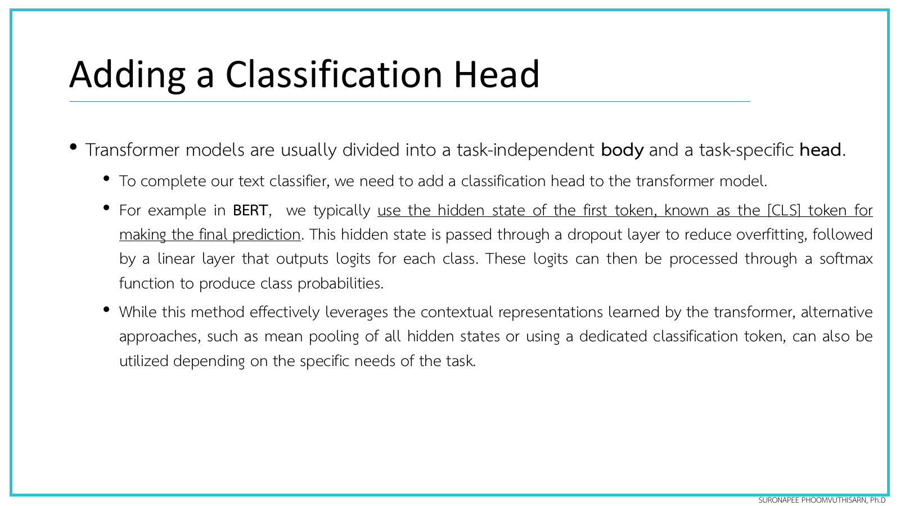
| ชนิด | จุดแข็ง | ตัวอย่าง | งาน | ในบทนี้ |
|---|---|---|---|---|
| Encoder-only | เข้าใจข้อความ | BERT, RoBERTa, DistilBERT | classification, NER | workshop, NER, BertViz |
| Decoder-only | สร้างข้อความ | GPT, LLaMA | generation, chat | text-generation |
| Encoder–decoder | แปลงลำดับหนึ่งเป็นอีกลำดับ | T5, BART | translation, summarization | T5 cross-attention, FLAN-T5, opus-mt |
วิธีจำ: encoder เห็นทั้งประโยค ไม่มี causal mask จึงเข้าใจดี · decoder เห็นแค่อดีตจึงสร้างทีละ token · encoder–decoder ใช้ cross-attention เชื่อมสองลำดับ
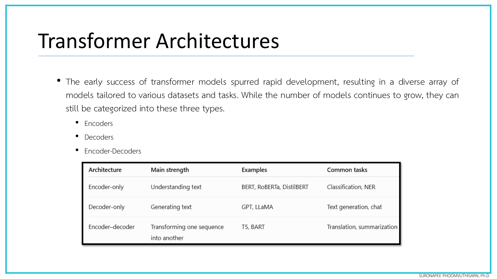
ลองฝึกต่อในแบบฝึก Lesson 12 หรืออ่านต่อ Lesson 13 — Generative Models
| หน้า | เนื้อหา | อยู่ในตอน |
|---|---|---|
| 1 | ปก Part 4 | etc — ปก |
| 2–6 | LLMs, Hugging Face, ecosystem, three core libraries | ตอน 1 |
| 7–16 | pipeline(), classification, NER, QA, generation, summarization, translation, tokenizer + model, BertViz, T5 cross-attention | ตอน 2 |
| 17–18 | Transfer learning in NLP, six approaches | ตอน 3 |
| 19–22 | PEFT, LoRA, LoRA config, RAG | ตอน 4 |
| 23–31 | Emotion dataset, Kaggle, explore, class distribution, tweet length, tokenizer | ตอน 5 |
| 32–40 | Feature extraction, hidden states, classification head, fine-tuning, Transformer architectures | ตอน 6 |
ตัวเลข softmax, LoRA, parameter และ macro F1 คำนวณซ้ำด้วย Python แล้ว สไลด์คลาดเคลื่อนสามจุด: หน้า 14 ร้อยละ 99.89 · หน้า 23 disgust แทน love · หน้า 13 ชื่องาน en_to_th กับโมเดล th-en